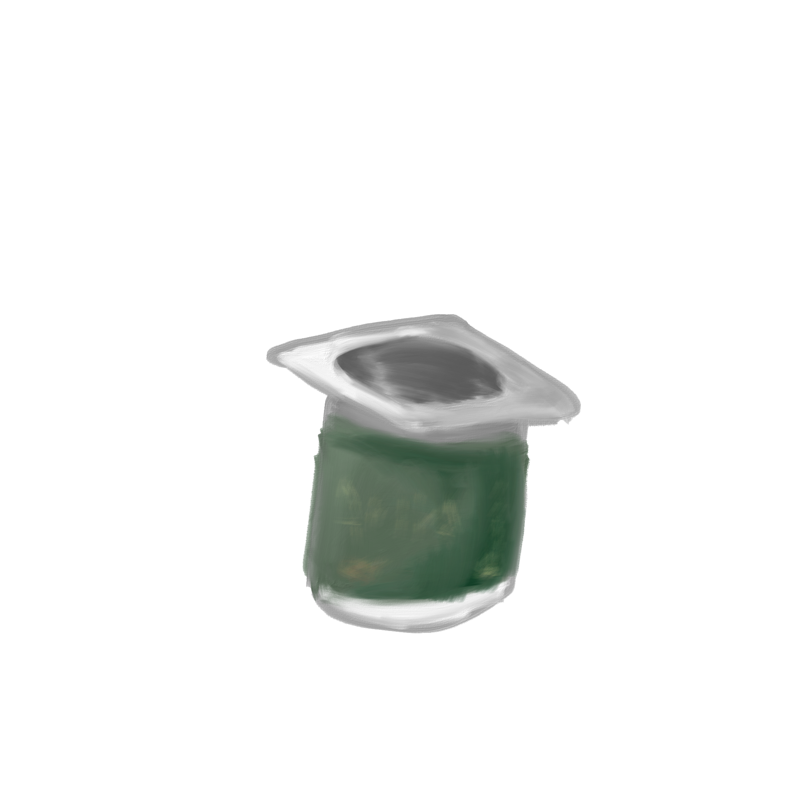

This curious little yogurt container. Covered in a film of dust but the brand was still recognizable to me. Something about it in the context of the ground made it quite cute. The first day I saw this yogurt it was perched perfectly on the curb, the second it had toppled down next to the gutter. Such is life.
